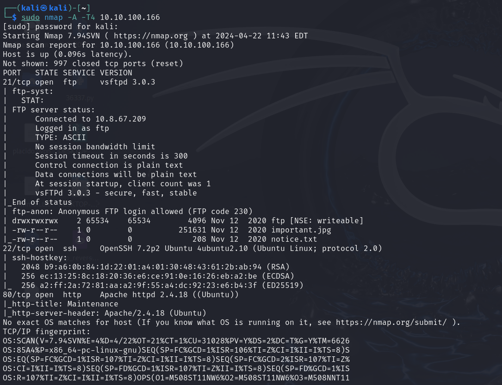
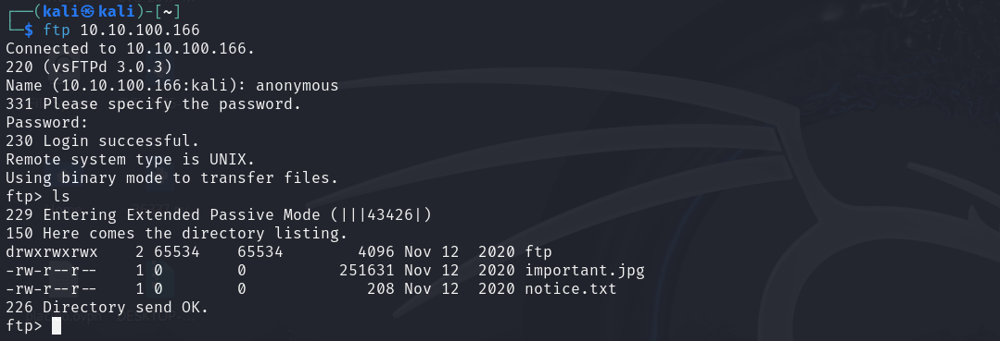
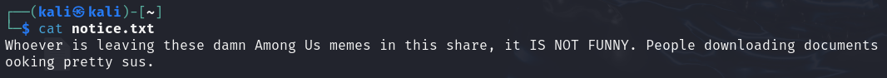
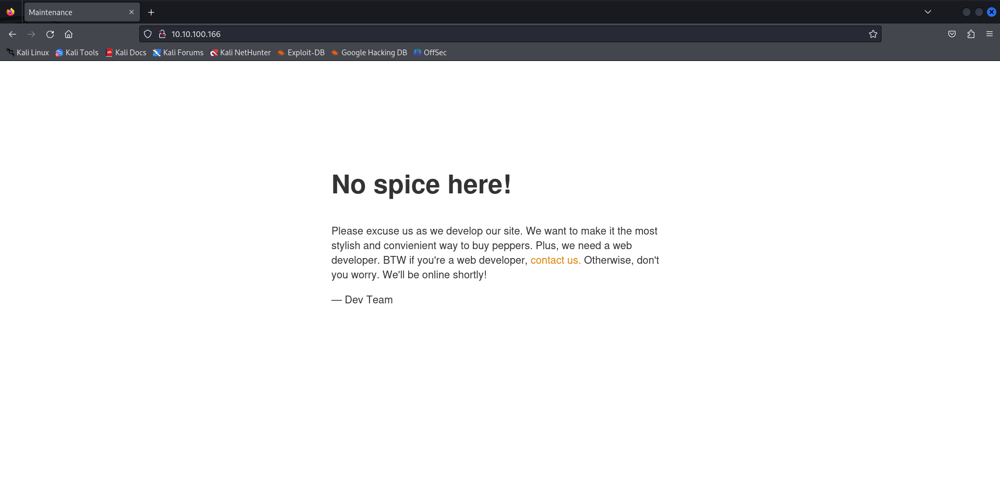

NMAP
FTP
 Web
Fuzzing
Using Gobuster to discover directories:
gobuster dir -u http://10.10.100.166/ -w /usr/share/wordlists/dirb/common.txtUploading a shell via FTP:

Using Gobuster to discover directories:
gobuster dir -u http://10.10.100.166/ -w /usr/share/wordlists/dirb/common.txtUploading a shell via FTP: